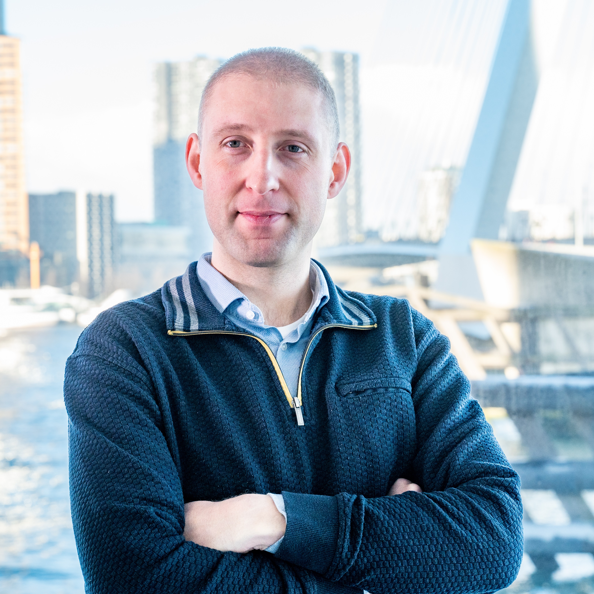

Extra fullstack development capacity. Frontend & backend, Java & Typescript.
{% icon "phosphor:cloud-duotone" %}
Cloud
I can help get the most out of your cloud implementation or help you migrate towards the cloud.
{% icon "phosphor:terminal-duotone" %}
Developer experience
I can help with setting up CI/CD and developer tooling for a smooth and efficient developer experience.
{% icon "phosphor:compass-tool-duotone" %}
Architecture
I can create a target architecture, or architect a migration to suit your challenges.
Interested how I can help your organisation? Contact me to find out!
About me
Hello, nice to meet! I am Pieter, an experienced developer who enjoys being a Swiss army knife in any development team. I like getting into the code as much
as explaining the code to business and managers. But I also find a smooth development process important, so I always look for ways to make a team
perform even better. For instance by optimizing CI/CD usage, or improving the adoption of cloud, or writing technical stories or even target architectures
to bring an application to the next level.
If you would like to know more about me, then feel free to see what others say about me, or see what skills I can offer to your organisation.

What people say about me
I knew Pieter because he worked in a feature team I talked to regularly, and asked him to join my (Platform) team, basically because Pieter is the kind of guy you would want in any team. A critical thinker who challenges the status quo where needed.
He knows the development stack you throw at him - or he will make sure he'll learn it quickly enough.
He understands software development is there to serve a need from the business - and can think along with product management to get the best results.
He understands there's more in life than just work - and takes a genuine interest in the people he works with.
I can recommend Pieter in many roles, and the one I have come to know him in - Lead Developer - he did an outstanding job!
Jouke Visser
Rabobank
Pieter is a passionate and experienced lead developer, who is not only an excellent developer, but he is also a conceptual thinker and easily thinks out of the box.
He is a good listener and can explain difficult technical solutions in a simple way. He also presents well and entertaining. It is really a joy to work with Pieter!